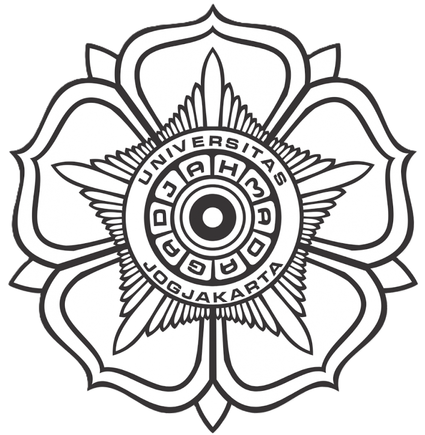

Klik salah satu wilayah kecamatan atau titik di peta untuk melihat informasi.
×
INFORMASI
×

PETA POTENSI EKONOMI DESA KABUPATEN KULON PROGO
Tahun 2025
Layer
Pasar
Jalan
Aksesibilitas Terhadap Pasar
Rasio Penduduk Bekerja
Kepadatan Aktivitas UMKM
Legenda
Tingkat Aksesibilitas (km)
0,86 - 1,82
1,82 - 3,97
3,97 - 5,61
5,61 - 8,017
8,017 - 21,984
Rasio Penduduk Bekerja (%)
73,49 - 73,94
73,94 - 74,30
74,30 - 74,47
74,47 - 74,73
74,73 - 99,18
Kepadatan Aktivitas UMKM
0 - 0,044
0,044 - 0,179
0,179 - 0,305
0,305 - 0,393
0,393 - 0,433
Jalan
Jalan Utama
Pasar
Lokasi Pasar
 Legenda
Legenda
Legenda
Legenda